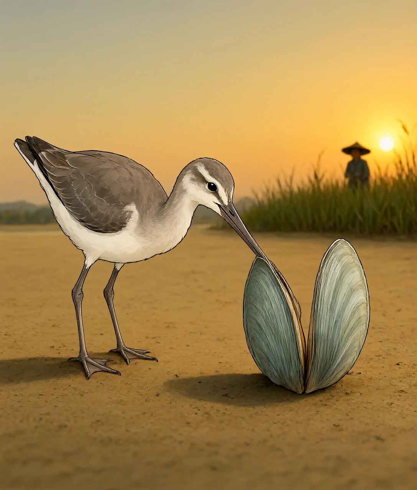
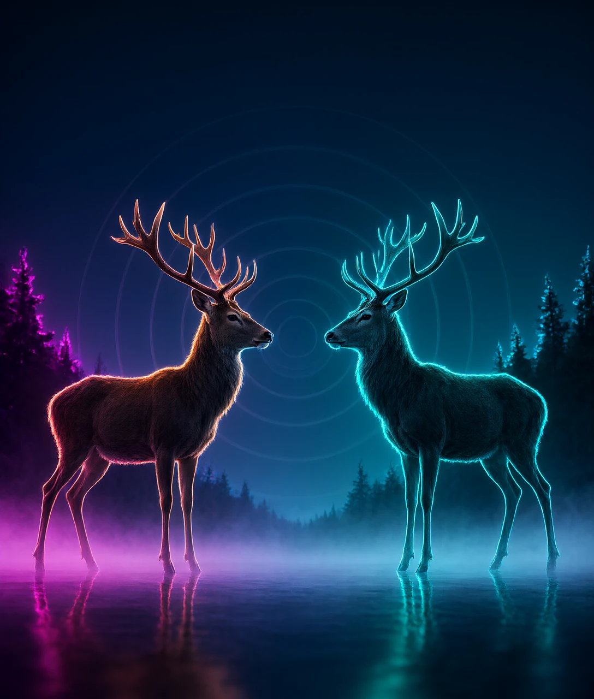
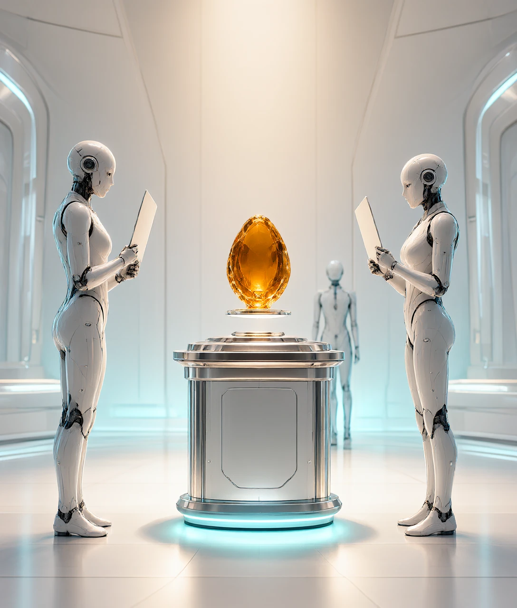
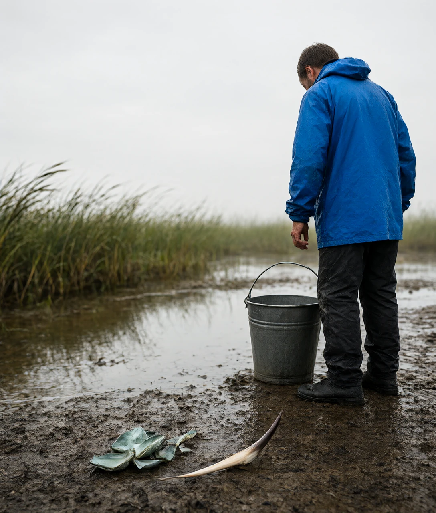

公元前 3 世纪，易水边，苏代对赵惠文王讲了一只鸟和一只蚌的事。赵国随后退了兵。

公元前 3 世纪，易水边上晒着一只河蚌。
一只鹬落下来啄它的肉。蚌壳一合，夹住了鹬的嘴。
两边都不肯先松。鹬说，今天不下雨，明天不下雨，就有一只死蚌。
蚌说，今天不放你，明天不放你，就有一只死鹬。
这时来了一个打鱼的人，弯腰把两个一起捡走了。
讲这件事的人叫苏代。他不是在讲寓言，他在劝赵惠文王别出兵。
赵国要打燕国，燕国打不过，只能找人来说情。
苏代说完，赵王答了一个字：善。军队没有出发。
换个说法，这件事就像两个人各拽绳子的一头。谁先松手，谁就输。
《战国策》里记录下这段对话，前后不到两百字。
但让赵王改主意的，不是这只鸟和这只蚌有多可怜。
是他忽然看清了图里的第三个位置。赵国是那只鹬，燕国是那只蚌，西边的秦国正站在岸上。
苏代的原话更直白：我怕的是强大的秦国来做那个打鱼的人。
也就是说，退兵不是因为心软，是因为他把账算了一遍。
那么这笔账，到底是怎么算出来的？
把这场对峙写成一张账单，只要两个字母。
V 是争的东西值多少。C 是每一秒要付多少。
撑了 t 秒，赢了拿走 V，输了白付 C 乘 t。
这两个东西的形状不一样。收益只发生一次，一口价。成本一直在长，一秒一秒往上加。
打个比方，就像打车。到站了车费就不再动，堵在路上表一直在跳。
上海出租车起步 14 元含 3 公里，之后每公里 2.5 元。堵车按时间算，每 4 分钟折成 1 公里。
你不会因为目的地值得去，就愿意让表一直跳下去。
对峙也是同一笔账。撑得越久，赢的那份没变，付的那份在长。
总有一秒，付出去的追上了能赢回来的。那一秒之后，坚持就变成亏损。
换算一下：奖品值 100 块，每秒成本 1 块，撑到 100 秒就该走了。多撑的每一秒都在倒贴。
奖品翻 2 倍，平均能撑的时间也翻 2 倍。成本翻 2 倍，能撑的时间就减半。
1970 年，生物学家帕克蹲在牛粪堆边上数粪蝇。
雄性粪蝇守在刚拉下的牛粪上等雌蝇。站得久机会多，可别的事都干不了。
帕克记录下每只蝇待了多久，算出一个最优时长。不是越久越好。
他给这套算法起了个名字，叫消耗战。
这只是个简化说法。真实的疲劳不均匀，拖到后面每 1 秒都比前面更贵。
还有一个细节容易被漏掉：V 和 C 不是固定的，它们由两边一起决定。
那么，既然都知道撑久了会亏，为什么还有那么多动物宁可撑着？
1973 年，《自然》杂志第 246 卷登了一篇论文。作者是史密斯和普莱斯。
他们把一个种群分成两种角色：鹰和鸽。
鹰是死打到底，受伤也打。鸽是虚张声势，对方不退就走。
算下来，鹰碰鹰，两边都重伤。鸽碰鸽，吼两句就散。
鹰碰鸽，鹰赢。可鹰要是太多，每一场都得挨一次重伤。
结果是两种角色会停在一个比例上，谁也没法把谁赶尽杀绝。
现实里的动物更省事。它们把打架改成考试。
1979 年，研究者在苏格兰的朗姆岛上观察红马鹿。发情季里，公鹿先比嗓门。
一头成年公鹿约 190 公斤。吼叫集中的那 30 天，体重会掉 20% 左右。
换算一下，就是掉 38 公斤，相当于一整袋大米压在背上走一个月。
为什么要用掉体重的方式去比？因为真顶角的代价更高：断角、受伤、感染。
吼声能反映体型。听一听就知道对方多大，比动手便宜得多。
打个比方，就像两个人吵架，先比谁嗓门大、谁人脉广，实在不行才伸手。
所以这个比例不是巧合，是被成本推出来的。
可两边都不肯退、又都不肯真打的时候，僵局该怎么收场？

鹬和蚌都盯着对方。力气、注意力、防守，全压在正面。
正面用满，背后就空了。渔翁拿走的是这块空位，不是战利品。
他不比谁强，也不需要。他只要不在场上。
拍卖场上这件事最清楚。两个买家一路抬价，最后钱进了卖家口袋。
抬价的两个人越投入，卖家越省事。他连话都不用说。
这里有个反常识：赢了的那个人，常常是亏的那个。
1971 年，三位工程师研究墨西哥湾的石油租约拍卖。他们发现中标者的出价系统性偏高。
因为谁都不知道那块地底下有多少油。估得最乐观的人出价最高，也最容易看走眼。
这个现象后来被叫作赢家诅咒。听着像笑话，账面上是真的。
2012 年 8 月 15 日，京东和苏宁打起了价格战。两家都说自己更便宜。
这场架没打几天。10 天之后，火药味就淡了。
不是谁赢了。是两边同时发现，成本在涨，收益没变。
那场对峙里，站着不动的第三方什么都不用做，就拿到了好处。
打个比方，两个人在雨里抢一把伞，伞骨抢断了，旁边的人衣服一点没湿。
那么，站在岸上的那个人，真的一次都没湿过鞋吗？

前面把渔翁讲得太舒服了。他有成本，而且常常空手而归。
第一笔成本是等。他要一直站在岸上，等到两只动物都动不了。
这段时间他打不了别的鱼。等着本身就是在付钱。
第二笔成本是判断。他怎么知道自己站的位置一定对？
要是有一方先退了，他什么也拿不到。
只有在两边实力接近、又都不肯让的时候，空位才值钱。这个前提很容易破。
更糟的一种情况：他自己也会变成被夹住的那一个。
第三方一旦下场去捡，就可能被两边一起盯上。
夹在两个对手之间的第三方，常常是他们先谈妥之后第一个被处理的对象。
还有一种更难对付的东西，叫沉没成本。已经付出去的钱和时间，会让人不肯走。
这也是消耗战最容易失控的地方。理性上该退，账上已经亏了，人反而加码。
打个比方，就像排队买票，已经排了 40 分钟，这时候走开最不甘心。
这一条到现在还没有好解法。学界对「人为什么会继续加码」仍有争议。
能确定的是三条。收益有限，成本累积，空位是对峙让出来的。
认下这三条，再看一场僵持，你会先去找那个不在场上的人。
那么，你现在身处的这场僵持里，站在岸上的那个人是谁？

赵王听完苏代的话就退了兵，最可能的原因是什么？
B 解析：故事只是外壳。真正让他停手的是那一句——秦国可能在岸上等着。
文章说对峙拖得越久越亏，根子在哪里？
C 解析：收益是一口价，成本是连续累加的。两条线必然交叉。
公鹿为什么宁可吼叫，也不真顶角？
D 解析：吼声能反映体型，不用见血就能分出高下。
按文章的说法，渔翁得利最主要是因为什么？
A 解析：得利靠位置，不靠脑子。正面用满，背后就空。
下面哪种情况，岸上的人最容易白等一场？
B 解析：空位只在僵持里出现。一方很快赢，僵持根本没形成。